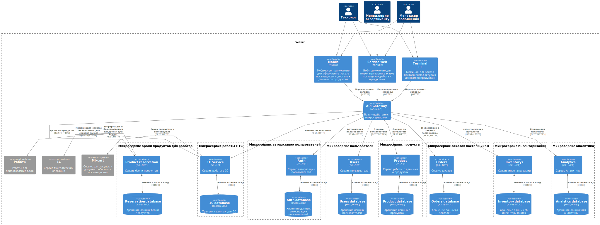

Компонентная архитектура
Обоснование выбора архитектурного стиля
Микросервисная архитектура является эффективным подходом для разработки приложений, которые должны масштабироваться и быть гибкими в изменении. В случае приложения для бронирования столиков в ресторанах, микросервисная архитектура может предоставить следующие преимущества:
-
Гибкость: Микросервисы могут быть разработаны и развернуты независимо друг от друга, что позволяет быстро вносить изменения в приложение без необходимости перезапуска всего приложения.
-
Масштабируемость: Микросервисы могут быть масштабированы отдельно друг от друга, что позволяет легко управлять нагрузкой на приложение и обеспечивать высокую доступность.
-
Устойчивость: Если один из микросервисов не работает, остальные микросервисы могут продолжать работу, что обеспечивает устойчивость приложения в целом.
-
Легкость разработки: Разработчики могут работать над отдельными микросервисами, что упрощает процесс разработки и тестирования.
-
Легкость внедрения новых функций: Новые функции могут быть добавлены в виде новых микросервисов, что позволяет быстро внедрять новые возможности в приложение.
Диаграмма компонентов
На диаграмме представлены компоненты микросервисной архитектуры системы и интеграции между данными компонентами.

Описание компонентов
| Приложение | Тип | Наименование | Описание | Взаимодействия |
|---|---|---|---|---|
| API Gateway | Container | API Gateway | Обеспечивает интерфейс для взаимодействия с микросервисами. | Принятие запросов от мобильного приложения, терминала и веб-сервиса. |
| Mobile App | Container | Mobile App | Мобильное приложение для оформления заказов и доступа к данным о продуктах. | Отправляет запросы через API Gateway к микросервисам. |
| Terminal | Container | Terminal | Терминал для заказа поставщикам и доступа к данным о продуктах. | Взаимодействует с API Gateway для оформления заказов. |
| Service Web | Container | Service Web | Веб-приложение для инвентаризации и заказов у поставщиков. | Работает через API Gateway для получения и отправки информации. |
| Микросервис авторизации пользователей | Container | Auth | Сервис авторизации пользователей. | Взаимодействует с Auth database для сохранения и извлечения данных. |
| Container | Auth Database | Хранит данные авторизации пользователей. | Чтение и запись данных авторизации. | |
| Микросервис пользователи | Container | Users | Сервис пользователей. | Взаимодействует с Users database для сохранения и извлечения данных. |
| Container | Users Database | Хранит данные пользователей. | Чтение и запись данных пользователей. | |
| Микросервис продукты | Container | Product | Сервис работы с данными о продуктах. | Взаимодействует с Product database для хранения информации о продуктах. |
| Container | Product Database | Хранит информацию о продуктах. | Чтение и запись данных о продуктах. | |
| Микросервис заказов поставщикам | Микросервис | Orders | Сервис обработки заказов от поставщиков. | Взаимодействует с Orders database для хранения данных о заказах. |
| База данных | Orders Database | Хранит информацию о заказах. | Чтение и запись данных о заказах. | |
| Микросервис брони продуктов для роботов | Микросервис | Reservation | Сервис бронирования продуктов. | Взаимодействует с Reservation database для хранения информации о бронированиях. |
| База данных | Reservation Database | Хранит информацию о бронированных продуктах. | Чтение и запись данных о бронированиях. | |
| Микросервис работы с 1С | Микросервис | 1С | Сервис для интеграции с 1С (бухгалтерский учет). | Взаимодействует с 1С database для хранения бухгалтерских данных. |
| База данных | 1С Database | Хранит данные для интеграции с 1С. | Чтение и запись данных для бухгалтерских операций. | |
| Микросервис Инвентаризации | Микросервис | Inventory | Сервис инвентаризации продуктов. | Взаимодействует с базой данных инвентаризации для хранения информации об инвентаризациях. |
| База данных | Inventory Database | Хранит данные об инвентаризациях. | Чтение и запись данных о инвентаризациях. | |
| Микросервис Аналитики | Микросервис | Analytics | Сервис Аналитики. | Взаимодействует с базой данных аналитики для хранения и составления отчетов |
| База данных | Analytics Database | Хранит данные об отчетах | Чтение и запись данных для отчетов | |
| Сервис для закупок и документооборота с поставщиками | External system | Mixcart | Сервис для закупок и документооборота с поставщиками. | Взаимодействует с сервисом 1С |
| Сервис работы роботов | External system | Сервис Роботы | Сервис, управляющий роботами для приготовления блюд. | Взаимодействует с сервисом !!!! |
| Сервис бухгалтерских операций | External system | 1C_Service | Система для бухгалтерских операций. | Взаимодействует с сервисом работы с 1С |
| Роботы для приготовления блюд | External system | Роботы | Роботы для приготовления блюд | Взаимодействует с сервисом брони продуктов для роботов |
Все микросервисы и базы данных связаны с API Gateway, который служит тем самым мостом для передачи данных между различными компонентами.
- Каждый микросервис отвечает за свою область функциональности, взаимодействуя с соответствующими базами данных для хранения и обработки данных.
- Внешние системы интегрированы через соответствующие микросервисы, что позволяет эффективно управлять процессами заказа и инвентаризации.
Таблица информационных потоков между системами
| Container-источник | Контейнер-приемник | Передаваемая информация | Протокол взаимодействия |
|---|---|---|---|
| mobileApp | API Gateway | Перенаправление запросов | HTTPS |
| terminal | API Gateway | Перенаправление запросов | HTTPS |
| service | API Gateway | Перенаправление запросов | HTTPS |
| API Gateway | Reservation | Бронь на продукты | REST/HTTPS |
| API Gateway | 1C_Service | Заказы поставщикам | REST/HTTPS |
| API Gateway | Inventory | Инвентаризация продуктов | REST/HTTPS |
| API Gateway | Auth | Авторизация пользователя | REST/HTTPS |
| API Gateway | Users | Данные пользователя | REST/HTTPS |
| API Gateway | Product | Данные по продуктам | REST/HTTPS |
| API Gateway | Orders | Информация о заказах поставщикам | REST/HTTPS |
| API Gateway | Analytics | Данные для аналитики | REST/HTTPS |
| Reservation | Роботы | Информация о бронированных продуктах для блюда | REST/HTTPS |
| 1C_Service | 1C | Информация о заказах поставщикам для сервера заказа | REST/HTTPS |
| 1C_Service | Mixcart | Заказ продуктов у поставщиков | REST/HTTPS |
| Auth | dbAuth | Чтение и запись данных регистрации пользователей | ODBC |
| Product | dbProduct | Чтение и запись данных о продуктах | ODBC |
| Orders | dbOrders | Чтение и запись данных о заказах | ODBC |
| Analytics | dbAnalytics | Чтение и запись данных для отчетов | ODBC |
| Reservation | dbReservation | Чтение и запись данных о запасах | ODBC |
| Inventory | dbInventory | Чтение и запись данных об инвентаризациях | ODBC |
| 1C_Service | db1C | Чтение и запись данных для 1С | ODBC |